Christmas in Tekapo! A few days before, we went to Wanaka to do a walk up Roy's Peak. Someone had the great idea to get up there for sunrise, so we set off at 2am to walk up in the dark. It actually wasn't that strange because we work at night so are used to using the headtorches. It took about 3 hours to get up, and was very lovely to see the little lights below of other groups climbing up - a very popular walk. It was very cold at the top, and we got up for the dawn light. Lots of people were sat at the top and when the sun came up it felt almost like sitting in a cinema - I heard some gasps as it came over the horizon. Was pretty cold up there but it was one of the most beutiful things i've ever seen.
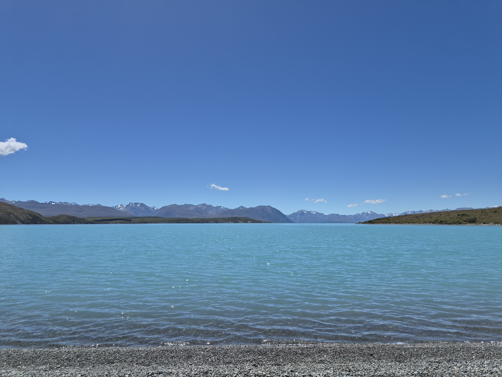
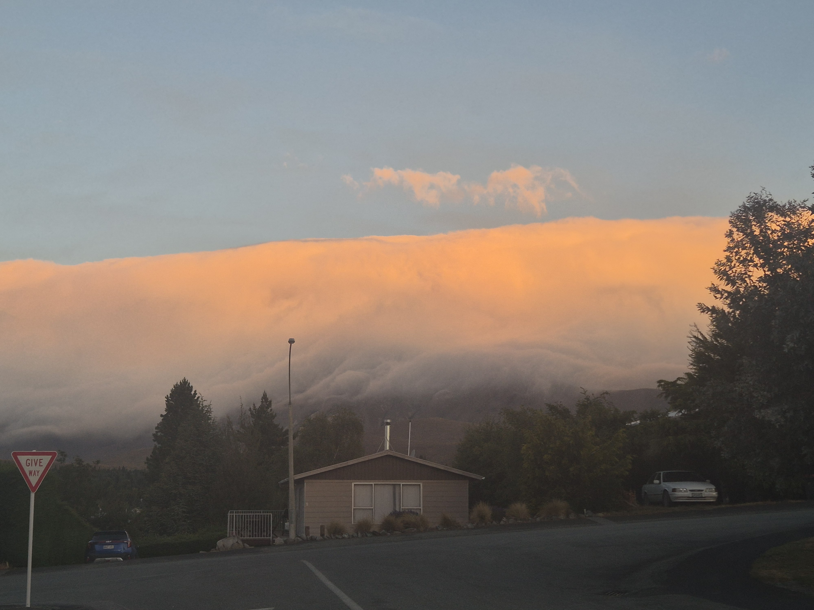
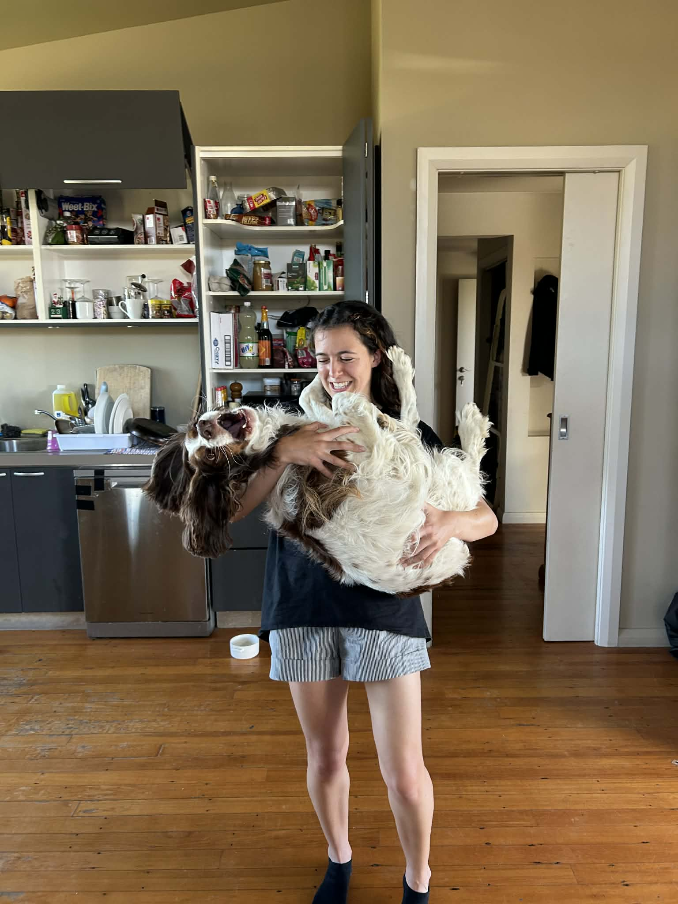
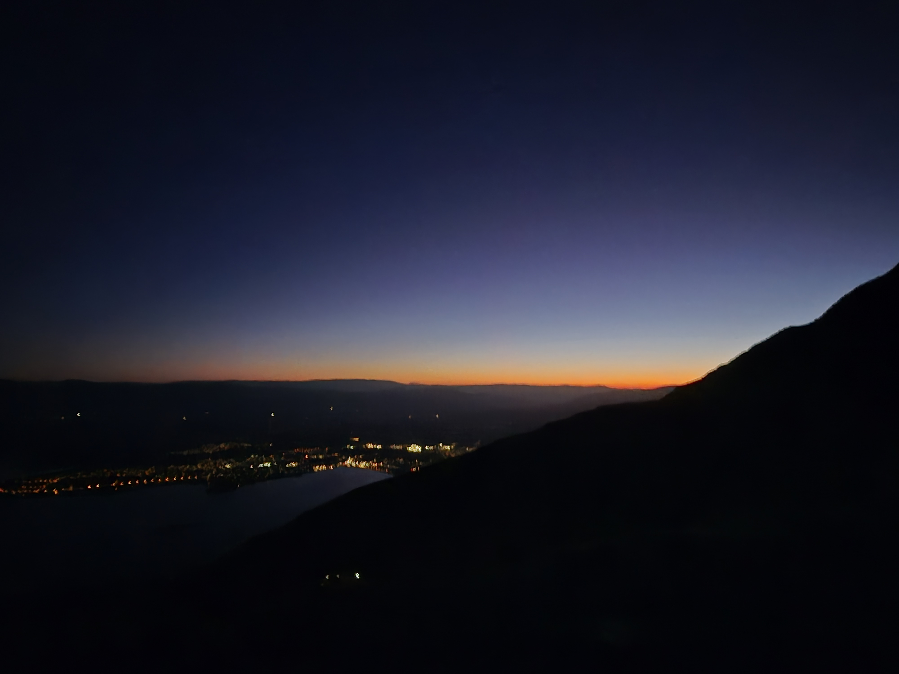
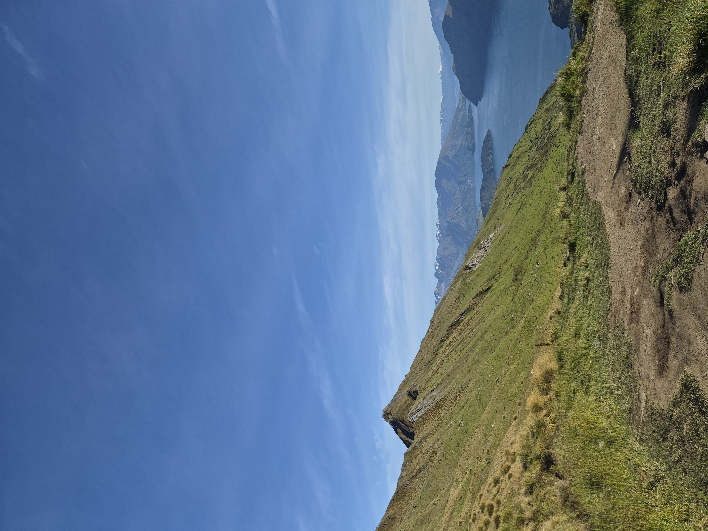
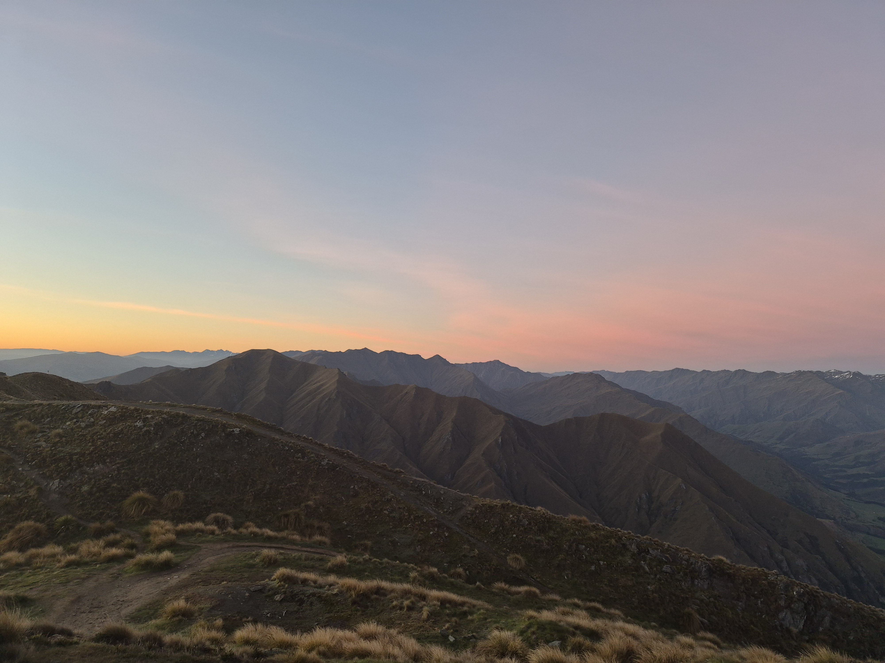
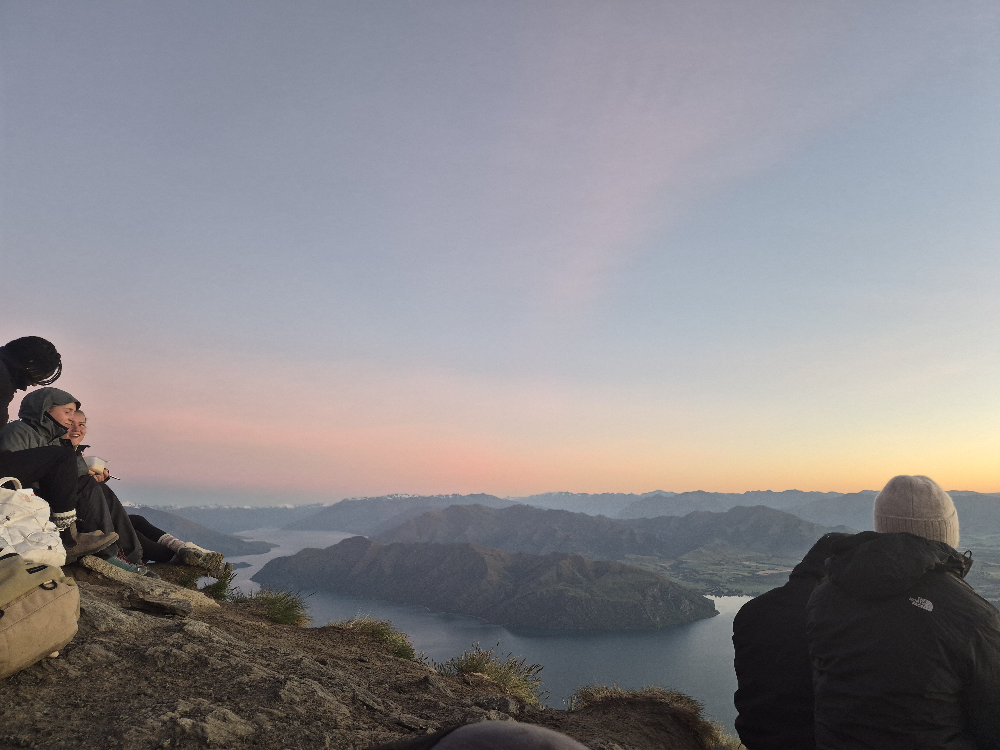
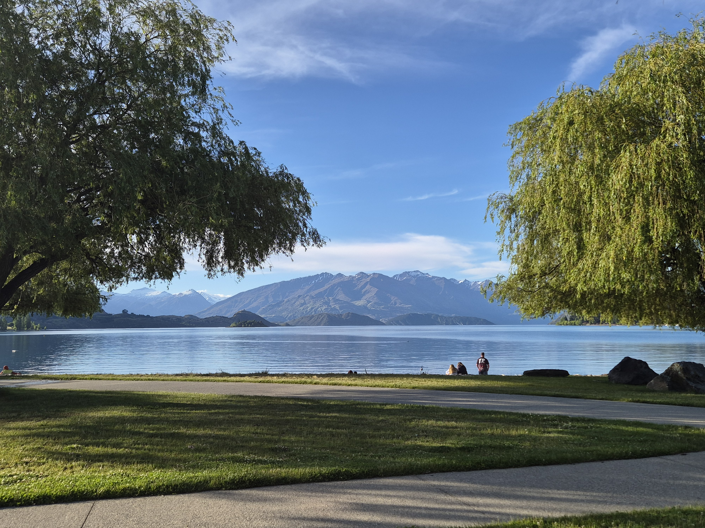
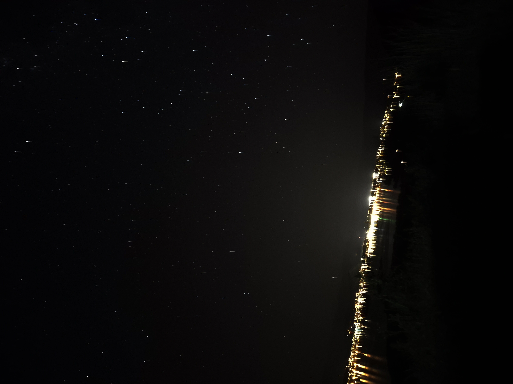
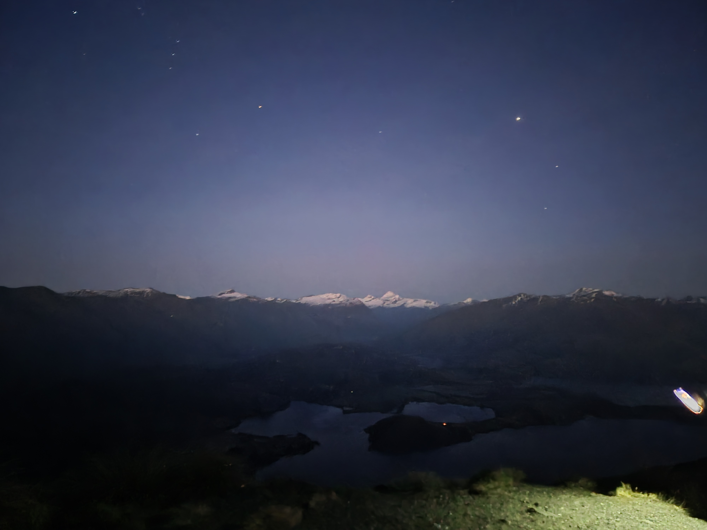
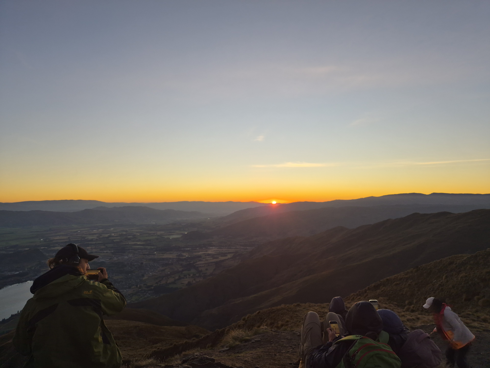
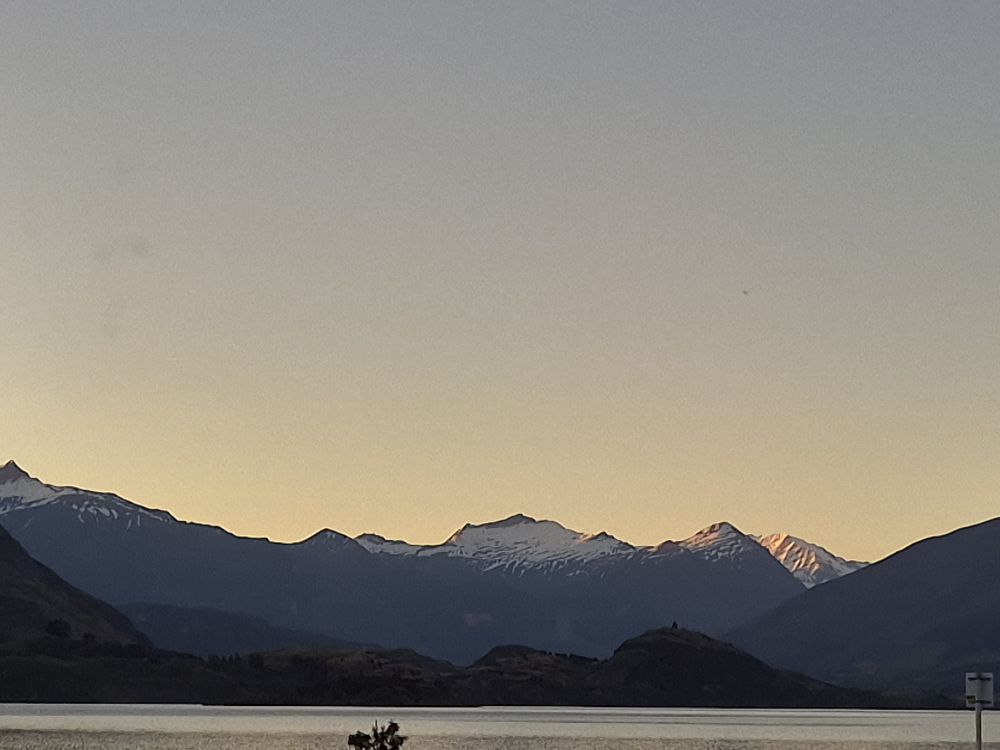
The walk down felt just as long, as we were walking in the light - so everything was new again. After that, we got breakfast and drove straight back- luckily it was the weekend so we did not need to work after.
Worked Christmas eve/Christmas morning but unfortunately we only could run the first tour as the clouds came over. But the first group were lovely and asked many very good questions. There was even a little girl who asked if we would see be able to see Father Christmas up there!
Spent Chritmas all together at the staff house, had some food and drink, and then went and played some cricket! We then met with some more people in the town, and people got very drunk (not me though of course). Was a fun day, but we did have work the next day so that was a struggle for some. Am hoping to spend new years day on the beach but the weather here at the moment is suggesting otherwise. Some last photos from best time of day, plus a crazy cloud formation.